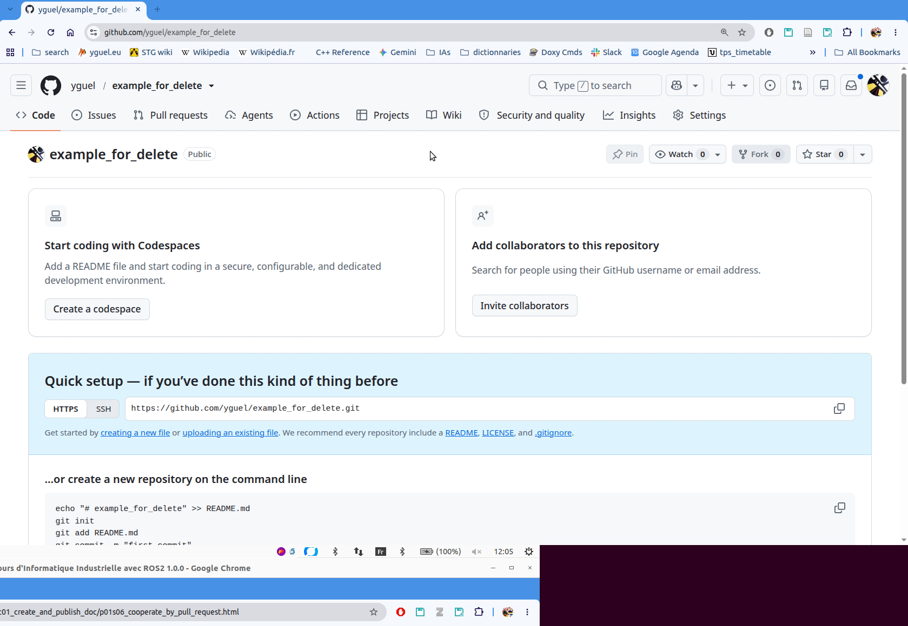
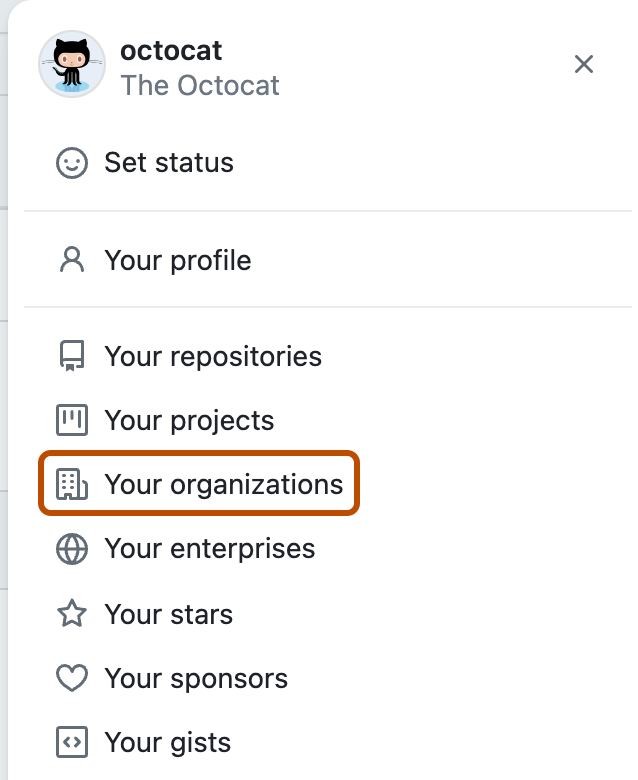
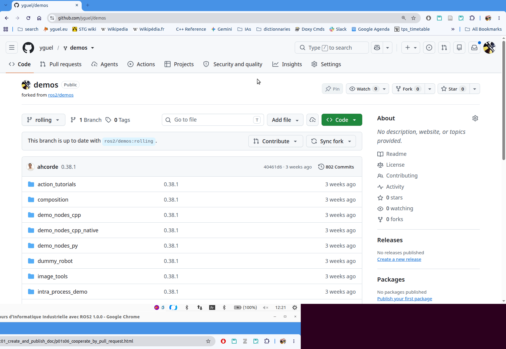
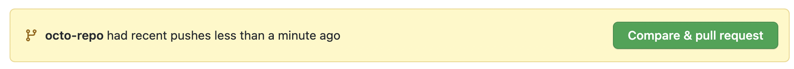
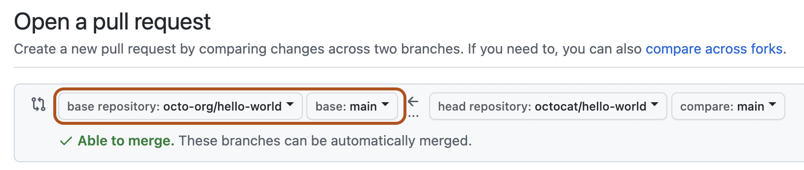
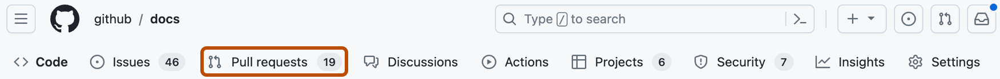
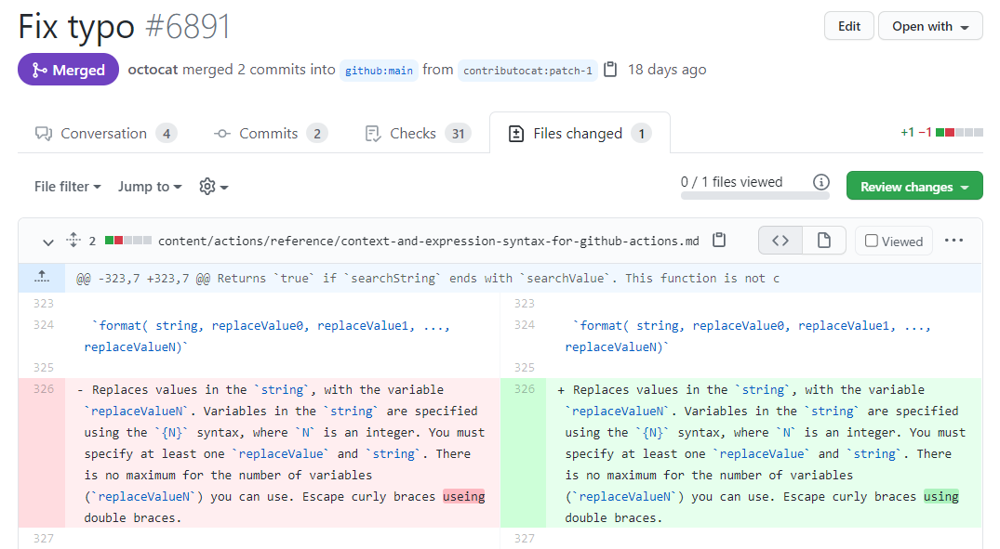

Coopérer grâce aux pull requests
Jusqu’ici chacun a travaillé seul, sur son projet et sur son dépôt github. Nous allons maintenant passer au travail en équipe : tout le groupe va contribuer à un seul et même dépôt, que nous appellerons le dépôt principal.
Note
Créer votre groupe
Dans chaque groupe, le premier qui est arrivé à ce point du cours sera le responsable du projet : c’est son projet git qui servira de base au dépôt commun du groupe, et c’est lui qui administrera le compte organisation.
Le principe du travail par pull request
Sur un projet partagé, personne ne pousse directement sur le dépôt principal. Le cycle de travail est toujours le même :
chaque personne travaille dans sa propre copie du dépôt principal : c’est le fork ;
chaque personne travaille dans sa propre branche :
mon_nom/xxxxxavecxxxxxdécrivant le contenu ou l’objectif de la branche par exemplemon_nom/feature_add_option_to_save_changes_into_config_fileoumon_nom/fix_bug42;quand son travail est prêt, elle fait une requête au dépôt principal d’intégrer sa branche : c’est la pull request (demande de tirage) ;
le responsable, ainsi que toutes les personnes concernées, lisent la pull request, la discute, puis l”accepte (merge) ou la refuse (close).
Note
Les deux mots à retenir :
fork : une copie d’un dépôt github dans votre compte github. Vous avez tous les droits sur votre fork, et aucun droit sur le dépôt d’origine. Github garde le lien entre les deux, c’est ce lien qui rend la pull request possible.
pull request : une demande faite au propriétaire du dépôt d’origine de tirer (
pull) les commits d’une de vos branches dans une de ses branches.
Le dépôt principal n’appartiendra à personne en particulier : il appartiendra au groupe. Sur github cela se traduit par un compte d’un type particulier, le compte organisation, que le responsable va créer au nom du groupe. Le responsable est simplement la personne qui administre ce compte ; tous les autres sont des membres. Les étapes de préparation ne sont donc pas les mêmes pour tout le monde : choisissez votre onglet ci-dessous.
Note
C’est ainsi que sont organisés les projets en entreprise et les grands projets libres : le dépôt de référence est rattaché à un compte organisation et non au compte personnel d’un développeur.
Cela permet de centraliser la gestion des droits et des branches sur le dépôt principal, pendant que tout le monde — y compris la personne qui administre l’organisation — contribue de la même manière, par fork et pull request.
Personne n’est un cas particulier, et le projet survit au départ de n’importe lequel de ses contributeurs.
Préparer le terrain
Votre feuille de route :
attendre que le responsable ait créé l’organisation du groupe et vous ait communiqué l’adresse du dépôt principal ;
supprimer votre propre dépôt
info_indus_tutorial;forker le dépôt principal du groupe.
Les deux dernières étapes sont détaillées ci-dessous.
Supprimer votre propre dépôt info_indus_tutorial sur github
Votre dépôt personnel n’est plus la référence : la référence est désormais le dépôt de l’organisation du groupe, et vous allez travailler dans un fork de ce dépôt, qui portera le même nom que votre dépôt actuel. Pour qu’aucune confusion ne soit possible entre les deux, nous supprimons votre dépôt personnel.
Avertissement
La suppression d’un dépôt sur github est définitive et irréversible. Elle supprime aussi les branches (dont gh-pages), les actions et la documentation publiée sur le web. Avant de valider, vérifiez deux choses : que le dépôt principal du groupe existe bien dans l’organisation, et que vous êtes bien sur votre dépôt personnel info_indus_tutorial.
Procédure :
allez sur la page de votre dépôt
info_indus_tutorialsur github ;cliquez sur l’onglet
Settings(en haut, à droite de la liste des onglets) ;restez dans la sous-section
Generalet descendez tout en bas de la page, jusqu’à l’encadré rougeDanger Zone;cliquez sur le bouton
Delete this repository;github vous demande de confirmer : cochez les cases proposées puis recopiez exactement le nom complet du dépôt demandé, de la forme
mon_login/info_indus_tutorial;cliquez sur le bouton rouge de confirmation
I understand the consequences, delete this repository.

Mettez aussi de côté votre copie locale, nous allons en récupérer une neuve juste après :
mv ~/info_indus/info_indus_tutorial ~/info_indus/info_indus_tutorial_old
Forker le dépôt principal du groupe
Le dépôt principal est celui de l’organisation ; son adresse est de la forme https://github.com/mon_groupe/info_indus_tutorial.
ouvrez cette adresse dans votre navigateur, en étant connecté à votre compte github personnel ;
cliquez sur le bouton
Fork, en haut à droite de la page ;dans la page
Create a new fork, laissez le champOwnersur votre login personnel et le champRepository namesurinfo_indus_tutorial;décochez la case
Copy the rolling branch only: nous voulons aussi récupérer la branchegh-pages;cliquez sur le bouton
Create fork.
Vous arrivez sur la page de votre fork. Sous son titre, github affiche forked from mon_groupe/info_indus_tutorial : c’est la marque du lien entre les deux dépôts, et c’est ce lien qui rendra la pull request possible.

Vous avez quelques étapes de plus que les autres, car c’est vous qui mettez le dépôt principal en place. Votre feuille de route :
créer un compte organisation github au nom du groupe ;
forker votre dépôt
info_indus_tutorialdans cette organisation : ce fork devient le dépôt principal du groupe ;régler le dépôt principal pour qu’il accepte les pull requests ;
communiquer l’adresse du dépôt principal à tous les membres ;
puis, exactement comme les autres membres, supprimer votre dépôt personnel et forker le dépôt principal.
Créer un compte organisation au nom du groupe
cliquez sur votre photo de profil en haut à droite, puis sur
Your organizations;
L’entrée
Your organizationsdans le menu de votre photo de profil.
Source : documentation officielle de GitHub (dépôt ``github/docs``, licence CC BY 4.0).cliquez sur le bouton vert
New organization;choisissez le plan gratuit
Free;remplissez le champ
Organization nameavec un nom au nom de votre groupe. Ce nom doit être unique sur tout github et ne peut contenir ni espace ni accent : prenez par exempleinfo-indus-groupe-01;renseignez le
Contact emailet indiquez, à la questionThis organization belongs to, qu’il s’agit d’un compte personnel (My personal account) ;validez. Github vous propose alors d’inviter des membres : saisissez les logins github des autres membres du groupe, ou passez l’étape avec
Skip this step.

Note
Inviter les membres dans l’organisation n’est pas nécessaire pour qu’ils puissent forker le dépôt et ouvrir des pull requests : un dépôt public est forkable par n’importe qui. L’invitation sert à autre chose : elle permettra plus tard de donner à certains membres le droit de relire et d’intégrer les pull requests des autres, au lieu que tout repose sur vous.
Forker votre dépôt dans l’organisation
C’est le moment de transférer votre travail au groupe. Vous n’allez pas déplacer votre dépôt, vous allez en faire un fork dans l’organisation : votre dépôt personnel reste intact pour l’instant.
allez sur la page de votre dépôt
info_indus_tutorialsur github ;cliquez sur le bouton
Fork, en haut à droite de la page ;
Le bouton
Fork, dans la barre de boutons en haut à droite de la page du dépôt.
Source : documentation officielle de GitHub (dépôt ``github/docs``, licence CC BY 4.0).dans la page
Create a new fork, ouvrez la liste déroulanteOwneret sélectionnez l’organisation du groupe que vous venez de créer, et non votre login personnel ;laissez le champ
Repository namesurinfo_indus_tutorial;décochez la case
Copy the rolling branch only: nous voulons aussi récupérer la branchegh-pages;cliquez sur le bouton
Create fork.
Le dépôt mon_groupe/info_indus_tutorial ainsi créé est désormais le dépôt principal du groupe.
Autoriser les pull requests sur le dépôt principal
Tous les réglages qui suivent se font sur le dépôt de l’organisation, pas sur votre dépôt personnel. Les réglages d’un dépôt ne sont pas recopiés par le fork : il faut les refaire.
allez sur la page du dépôt
mon_groupe/info_indus_tutorial;cliquez sur l’onglet
Settings, sous-sectionGeneral;dans la section
Features, vérifiez que la caseIssuesest cochée : c’est là que se feront les discussions ;descendez jusqu’à la section
Pull Requestset cochez au moinsAllow merge commitsainsi queAllow squash merging;cochez également
Automatically delete head branches: github supprimera les branches une fois les pull requests intégrées, cela évite d’accumuler des branches mortes.
Note
Un dépôt public accepte les pull requests venant de n’importe quel fork sans réglage particulier : il n’y a pas de case Allow pull requests à cocher. Ce qui se règle ici, c’est comment les pull requests pourront être intégrées. Vérifiez simplement, dans la Danger Zone tout en bas de la page General, que le dépôt est bien public : s’il était privé, personne ne pourrait le forker.


Note
Pour que la documentation du groupe soit publiée comme l’était la vôtre, il reste deux choses à refaire sur le dépôt de l’organisation :
1. rejouer le réglage des actions github (Settings → Actions → General), car un fork ne recopie pas ces autorisations ;
2. corriger dans le fichier .github/workflows/documentation.yml la ligne git clone ..., qui pointe encore vers votre dépôt personnel, pour qu’elle pointe vers l’adresse HTTPS du dépôt de l’organisation.
Faites ce second point plus tard, par une pull request : ce sera votre première contribution au dépôt du groupe.
Communiquer l’adresse du dépôt principal à tous les membres
Sur la page d’accueil du dépôt de l’organisation, cliquez sur le bouton vert Code et copiez l’adresse HTTPS (voir la procédure du chapitre précédent), puis diffusez-la au groupe. Elle est de la forme :
https://github.com/mon_groupe/info_indus_tutorial
Note
Diffusez l’adresse HTTPS et non l’adresse ssh : l’adresse HTTPS est celle que l’on ouvre dans un navigateur pour forker le dépôt. Chaque membre utilisera ensuite l’adresse ssh de son propre fork pour le cloner.
Et maintenant, comme tout le monde
Le dépôt principal existe et il est en place. Vous redevenez à cet instant un contributeur comme les autres : votre dépôt personnel info_indus_tutorial fait double emploi avec celui de l’organisation, vous allez donc le supprimer, puis forker le dépôt principal — autrement dit reforker chez vous ce que vous venez de forker dans l’organisation.
Supprimer votre propre dépôt info_indus_tutorial sur github
Votre dépôt personnel n’est plus la référence : la référence est désormais le dépôt de l’organisation du groupe, et vous allez travailler dans un fork de ce dépôt, qui portera le même nom que votre dépôt actuel. Pour qu’aucune confusion ne soit possible entre les deux, nous supprimons votre dépôt personnel.
Avertissement
La suppression d’un dépôt sur github est définitive et irréversible. Elle supprime aussi les branches (dont gh-pages), les actions et la documentation publiée sur le web. Avant de valider, vérifiez deux choses : que le dépôt principal du groupe existe bien dans l’organisation, et que vous êtes bien sur votre dépôt personnel info_indus_tutorial.
Procédure :
allez sur la page de votre dépôt
info_indus_tutorialsur github ;cliquez sur l’onglet
Settings(en haut, à droite de la liste des onglets) ;restez dans la sous-section
Generalet descendez tout en bas de la page, jusqu’à l’encadré rougeDanger Zone;cliquez sur le bouton
Delete this repository;github vous demande de confirmer : cochez les cases proposées puis recopiez exactement le nom complet du dépôt demandé, de la forme
mon_login/info_indus_tutorial;cliquez sur le bouton rouge de confirmation
I understand the consequences, delete this repository.
Mettez aussi de côté votre copie locale, nous allons en récupérer une neuve juste après :
mv ~/info_indus/info_indus_tutorial ~/info_indus/info_indus_tutorial_old
Forker le dépôt principal du groupe
Le dépôt principal est celui de l’organisation ; son adresse est de la forme https://github.com/mon_groupe/info_indus_tutorial.
ouvrez cette adresse dans votre navigateur, en étant connecté à votre compte github personnel ;
cliquez sur le bouton
Fork, en haut à droite de la page ;dans la page
Create a new fork, laissez le champOwnersur votre login personnel et le champRepository namesurinfo_indus_tutorial;décochez la case
Copy the rolling branch only: nous voulons aussi récupérer la branchegh-pages;cliquez sur le bouton
Create fork.
Vous arrivez sur la page de votre fork. Sous son titre, github affiche forked from mon_groupe/info_indus_tutorial : c’est la marque du lien entre les deux dépôts, et c’est ce lien qui rendra la pull request possible.
À partir d’ici, tout le monde fait exactement la même chose : responsable comme membres, chacun possède son fork personnel du dépôt principal et travaille dedans.
Cloner son fork
Récupérez l’adresse ssh de votre fork (bouton vert Code sur la page de votre fork, onglet SSH), exactement comme au chapitre précédent, puis clonez-le :
cd ~/info_indus
git clone MY_FORK_SSH_ADDRESS info_indus_tutorial
Remplacez MY_FORK_SSH_ADDRESS par l’adresse ssh de votre fork. Elle est de la forme git@github.com:mon_login/info_indus_tutorial.git.
Avertissement
Clonez bien votre fork, et non le dépôt principal. Si vous clonez le dépôt principal, vous ne pourrez rien y pousser : vous n’avez pas les droits en écriture dessus.
Placez-vous dans le dépôt et vérifiez où pointe origin :
cd ~/info_indus/info_indus_tutorial
git remote -v
Vous devez voir votre fork, et lui seul.
Note
Par convention, on ajoute un second dépôt distant nommé upstream qui pointe vers le dépôt principal. Il sert plus tard à récupérer le travail des autres une fois qu’il a été intégré :
git remote add upstream https://github.com/mon_groupe/info_indus_tutorial.git
origin est à vous et vous pouvez y pousser ; upstream ne vous appartient pas et vous n’en ferez que des git fetch / git pull.
Créer sa branche personnelle
On ne travaille jamais directement sur rolling : c’est la branche de référence, celle qui doit toujours fonctionner. Chacun crée donc sa branche de travail, nommée par exemple mon_nom/dev.
Vérifiez d’abord sur quelle branche vous êtes :
git branch -a
Créez ensuite votre branche à partir de rolling :
git switch -c mon_nom/dev
Remplacez mon_nom par votre nom ou votre login github, sans espace ni accent : par exemple yguel/dev.
Note
Le caractère / dans yguel/dev n’est pas un répertoire : git autorise les / dans les noms de branche et les outils s’en servent pour regrouper les branches par préfixe. C’est la convention la plus répandue : nom/dev, nom/fix-truc, feature/machin. Elle rend la liste des branches lisible dès que le projet grossit.
Vérifiez que vous êtes bien sur votre nouvelle branche :
git branch -a
L’étoile * doit se trouver devant mon_nom/dev.
Pousser sa branche sur son fork
Votre branche n’existe pour l’instant que sur votre machine. Poussez-la sur votre fork :
git push -u origin mon_nom/dev
Comme au chapitre précédent, l’option -u n’est nécessaire que la première fois que vous poussez cette branche : elle associe votre branche locale à la branche distante du même nom. Ensuite, un simple git push suffira.
Rafraîchissez la page de votre fork sur github : le sélecteur de branches, en haut à gauche de la liste des fichiers, affiche maintenant deux branches, rolling et mon_nom/dev.
Faire une modification personnelle
Chacun va maintenant faire une modification différente de celle des autres, pour que les pull requests soient bien distinctes.
Éditez le fichier doc/sphinx/source/index.rst et ajoutez-y une ligne contenant votre prénom et votre nom, par exemple :
Cette ligne a été ajoutée par Manuel YGUEL.
Puis enregistrez le travail et poussez-le :
git add doc/sphinx/source/index.rst
git commit -m "Add a line signed by MY_NAME in the main index"
git push
Remplacez MY_NAME par votre nom. Notez qu’il n’y a plus besoin de l’option -u : la branche est déjà associée.
Ouvrir une pull request
Allez sur la page de votre fork sur github et rafraîchissez-la. Github détecte que vous venez de pousser une branche et affiche, juste au-dessus de la liste des fichiers, un bandeau jaune avec un bouton vert Compare & pull request.
cliquez sur le bouton
Compare & pull request;github ouvre la page
Open a pull request. Vérifiez les quatre champs de la ligne de comparaison, en haut :base repository: le dépôt principal,mon_groupe/info_indus_tutorial;base: la brancherollingdu dépôt principal, c’est là que vous demandez à être intégré ;head repository: votre fork ;compare: votre branchemon_nom/dev;
donnez un titre clair à la pull request, par exemple
Ajout de la signature de Manuel YGUEL;écrivez dans le champ de description ce que vous avez modifié et pourquoi ;
cliquez sur le bouton vert
Create pull request.
Note
Si le bandeau jaune a disparu (il ne s’affiche que quelques minutes après le push), le chemin complet fonctionne toujours : sur la page de votre fork, cliquez sur l’onglet Pull requests, puis sur le bouton vert New pull request, et renseignez les quatre champs ci-dessus.


Le bandeau qui apparaît sur votre fork juste après le push, avec le bouton Compare & pull request.
Source : documentation officielle de GitHub (dépôt ``github/docs``, licence CC BY 4.0).


La ligne de comparaison de la page Open a pull request. Ici base repository est le dépôt d’une organisation (octo-org) et head repository le fork personnel (octocat) : c’est exactement votre situation.
Source : documentation officielle de GitHub (dépôt ``github/docs``, licence CC BY 4.0).
Votre pull request est maintenant ouverte sur le dépôt principal. Vous n’avez pourtant aucun droit d’écriture dessus : c’est tout l’intérêt du mécanisme. Vous avez proposé une modification, vous ne l’avez pas imposée.
Voir les pull requests de tout le monde
Attendez que chaque membre du groupe ait ouvert la sienne, puis :
ouvrez l’adresse du dépôt principal communiquée par le responsable ;
cliquez sur l’onglet
Pull requests, en haut de la page. Le compteur à côté du nom de l’onglet indique le nombre de pull requests ouvertes ;vous voyez la liste de toutes les pull requests du groupe, avec pour chacune son numéro (
#1,#2, …), son titre, son auteur et sa date ;cliquez sur l’une d’elles, puis sur l’onglet
Files changed: vous voyez lediff, ligne par ligne, exactement comme avecgit diff;revenez sur l’onglet
Conversation: c’est là que se discute la modification. Tout le monde peut commenter, y compris dans la marge d’une ligne précise dudiff.


L’onglet Pull requests du dépôt principal, et son compteur de pull requests ouvertes.
Source : documentation officielle de GitHub (dépôt ``github/docs``, licence CC BY 4.0).


Une pull request, ouverte sur son onglet Files changed : le diff est affiché ligne à ligne, en rouge ce qui est retiré, en vert ce qui est ajouté. Les onglets Conversation, Commits, Checks et Files changed sont visibles en haut.
Source : documentation officielle de GitHub (dépôt ``github/docs``, licence CC BY 4.0).
Retenez bien ce point : tout le travail proposé est visible par tous, avant d’être intégré. C’est ce qui rend la relecture par les pairs possible, et c’est la raison d’être des pull requests.
Refuser toutes les pull requests
Note
Cette partie se fait en groupe.
Quand on travaille à distance, on peut faire en sorte que plusieurs personnes autorisées soient nécessaire pour valider une pull request avant qu’elle ne soit intégrée.
Cela permet de garantir que le code est relu et approuvé par plusieurs membres du groupe avant d’être fusionné.
L’option sous github se trouve dans les Settings du dépôt principal, sous Branches, puis en configurant les branch protection rules pour la branche rolling.
Il faut choisir le nombre de relecteurs obligatoires et éventuellement d’autres critères de protection de la branche.
Dans notre cas particulier, réunissez vous autour du responsable.
Ces pull requests n’étaient qu’un exercice : nous allons maintenant toutes les refuser, pour voir ce que cela donne et pour laisser le dépôt principal propre.
Sur github, refuser une pull request se dit fermer (close) : on ne la supprime pas, on la clôt sans l’intégrer. Elle reste consultable, avec toute sa discussion, dans le filtre Closed.
Le responsable, pour chaque pull request ouverte :
ouvrez le dépôt principal, onglet
Pull requests;cliquez sur la première pull request de la liste ;
descendez tout en bas de l’onglet
Conversation, jusqu’au champ de commentaire ;écrivez un commentaire expliquant le refus, par exemple
Merci, c'était un exercice : je ferme cette pull request sans l'intégrer.;cliquez sur le bouton
Close with comment(si vous n’écrivez rien, le bouton s’appelle simplementClose pull request) ;recommencez pour chacune des autres pull requests.
Une fois toutes les pull requests fermées, retournez sur l’onglet Pull requests du dépôt principal : le compteur Open est à zéro, et le filtre Closed les contient toutes.
Note
Fermer une pull request ne touche ni à votre fork ni à votre branche mon_nom/dev : votre travail est toujours là, chez vous. Une pull request fermée peut d’ailleurs être rouverte avec le bouton Reopen pull request, et pousser un nouveau commit sur la branche mon_nom/dev d’une pull request ouverte la met automatiquement à jour. C’est ainsi qu’on corrige un travail après une relecture : on ne referme pas une pull request pour en ouvrir une autre, on pousse les corrections sur la même branche.
Note
Les captures d’écran fixes de cette section proviennent de la documentation officielle de GitHub, publiée dans le dépôt github/docs sous licence CC BY 4.0.
Le détail fichier par fichier se trouve dans resources/img/pull_request/github_docs/CREDITS.txt.
Les noms de dépôts et de comptes qu’on y voit (octocat, octo-org, hello-world, github/docs) sont ceux des exemples de GitHub : transposez-les à votre fork, à votre organisation et à info_indus_tutorial.
Commencez à collaborer !
Chacun d’entre vous peut maintenant docummenter les équations de la dynamique du système 5 barres (voir Description mécanique de la plateforme système 5 barres)